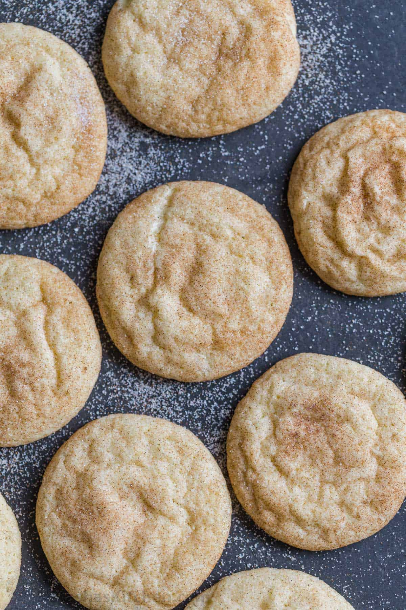

Snickerdoodles

A cinnamony, sugary crunch treat!
Some may say that Snickerdoodles are a holiday treat, but not in my opinion. This straightforward Snickerdoodle recipe will have the delicious taste of cinnamon and sugar in your mouth in no time.
Ingredients
- 2 2/3 Cups Flour
- 2 Teaspoons Cream of Tartar
- 2 Teaspoons Cinnamon
- 1 Teaspoon Baking Soda
- 1/8th Teaspoon Salt
- 1 Cup Butter (Softened)
- 2 Eggs
Topping
- 1/4 Cup Sugar
- 1 Tablespoon Cinnamon
Directions
- Preheat oven to 400°F.
- Combine flour, cream of tartar, cinnamon, baking soda, and salt. Set aside.
- With mixer on medium, combine sugar, butter and eggs. Stir in flour mixture.
- Combine cinnamon and sugar for topping in a small bowl. Divide dough into 32 pieces and roll each piece into a ball. Roll balls in cinnamon-sugar mixture. Place 2 inches apart on ungreased cookie sheet.
- Bake 8-10 minutes.